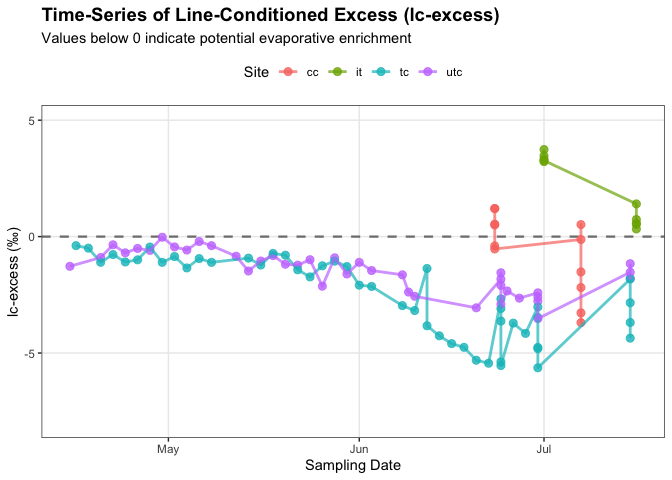

library(tidyverse)
library(here)
library(janitor)
library(viridis)
library(wesanderson)
library(lme4)
library(ggplot2)
library(patchwork)figures-referenced
Packages
Data
compiled_isotope <- read_csv(here("data", "compiled.csv"), show_col_types = FALSE) |>
clean_names() |> # lowercase and underscores in column names
rename(sample = sample_name, # renaming columns to be shorter
delta_d = processed_delta_d,
delta_d_std = processed_delta_d_stdev,
delta_o = processed_delta_18o,
delta_o_std = processed_delta_18o_stdev) |>
mutate(date = mdy(date)) # telling r the date format
gradient_tc <- read_csv(here("data", "tc_gradient_data.csv"))
gradient_cc <- read_csv(here("data", "cc_gradient_data.csv"))
metadata <- read_csv(here("data", "metadata.csv"))
trail_creek <- compiled_isotope |>
filter(location %in% c("utc", "tc"))
coal_creek <- compiled_isotope |>
filter(location %in% c("cc")) |>
filter(site != "coal_3")
coal_creek_all <- compiled_isotope |>
filter(location %in% c("cc"))
italian_creek <- compiled_isotope |>
filter(location == "ic")
# Downstream Trail Creek
tc_data <- read_csv(here("data", "TrailCreek_2026-07-23-15.csv"), show_col_types = FALSE) |> # reading in data
clean_names() |> # lowercase and underscores in column names
rename(date_time = date_time_mdt, # renaming columns to be shorter
dp = differential_pressure_k_pa,
ap = absolute_pressure_k_pa,
temp = temperature_c,
water_level = water_level_m,
bp = barometric_pressure_k_pa) |>
mutate(date_time_parsed = mdy_hms(date_time), # telling r the date format
date = as_date(date_time_parsed)) |> # making a date column
group_by(date) |>
summarise(avg_dp = mean(dp, na.rm = TRUE), # averaging the data based on the day
avg_ap = mean(ap, na.rm = TRUE),
avg_temp = mean(temp, na.rm = TRUE),
avg_water_level = mean(water_level, na.rm = TRUE),
avg_bp = mean(bp, na.rm = TRUE),
total_readings = n(), # the amount of data it used to average
.groups = "drop") |>
mutate(site = "tc") # creating a new column of the site
# Upstream Trail Creek
utc_data <- read_csv(here("data", "UTC_2026-07-23-15.csv"), show_col_types = FALSE) |> # reading in data
clean_names() |> # lowercase and underscores in column names
rename(date_time = date_time_mdt, # renaming columns to be shorter
dp = differential_pressure_k_pa,
ap = absolute_pressure_k_pa,
temp = temperature_c,
water_level = water_level_m,
bp = barometric_pressure_k_pa) |>
mutate(date_time_parsed = mdy_hms(date_time), # telling r the date format
date = as_date(date_time_parsed)) |> # making a date column
group_by(date) |>
summarise(avg_dp = mean(dp, na.rm = TRUE), # averaging the data based on the day
avg_ap = mean(ap, na.rm = TRUE),
avg_temp = mean(temp, na.rm = TRUE),
avg_water_level = mean(water_level, na.rm = TRUE),
avg_bp = mean(bp, na.rm = TRUE),
total_readings = n(), # the amount of data it used to average
.groups = "drop") |>
mutate(site = "utc") # creating a new column of the site
tc_utc_data <- merge(tc_data, utc_data, all = TRUE) # merging the tc and utc data
isco_data <- merge(
x = tc_utc_data,
y = compiled_isotope,
by.x = c("site", "date"), # columns in tc_utc_data
by.y = c("location", "date") # matching columns in compiled_isotope
)
tc_isco <- isco_data |>
filter(site %in% c("tc"))
utc_isco <- isco_data |>
filter(site %in% c("utc"))Figure 1: Time-Series of Line-Conditioned Excess (lc-excess)
ggplot(data = compiled_isotope,
aes(x = date,
y = lc_excess,
color = location,
group = location)) +
geom_hline(yintercept = 0,
linetype = "dashed",
color = "gray50",
size = 0.8) +
geom_point(size = 2.5,
alpha = 0.8) +
geom_line(linewidth = 1,
alpha = 0.7) +
labs(title = "Time-Series of Line-Conditioned Excess (lc-excess)",
subtitle = "Values below 0 indicate potential evaporative enrichment",
x = "Sampling Date",
y = "lc-excess (\u2030)",
color = "Site") +
ylim(-8,5) +
theme_bw() +
theme(plot.title = element_text(face = "bold", size = 14),
panel.grid.minor = element_blank(),
legend.position = "top")
# Buildings a look up table of stream distances
distances <- tibble(site = c("TC-P3-US", "TC-P3-mid", "TC-P3-DS", "TC-BDA1",
"TC-BDA1.5", "TC-BDA2", "TC-BDA3"),
dist_m = c(57.6, 333, 654, 1160, 1620, 2240, 3150)) |>
mutate(xmax = dist_m,
xmin = lag(dist_m, default = 0)) # previous site's distance, 0 for first
# Creating a filtered data frame for lc-excess
gradient_lc_clean <- gradient_tc |>
select(site, normalized_stream_distance_m, `Δlc-excess/Δx_6-24`, `Δlc-excess/Δx_6-30`, `Δlc-excess/Δx_7-15`) |>
pivot_longer( cols = c(`Δlc-excess/Δx_6-24`, `Δlc-excess/Δx_6-30`, `Δlc-excess/Δx_7-15`),
names_to = "date",
values_to = "gradient") |>
mutate(date = case_when(date == "Δlc-excess/Δx_6-24" ~ "2026-06-24",
date == "Δlc-excess/Δx_6-30" ~ "2026-06-30",
date == "Δlc-excess/Δx_7-15" ~ "2026-07-15"),
gradient = as.numeric(gradient)) |>
left_join(distances %>% select(site, xmin, xmax), by = "site") |>
mutate(site = factor(site, levels = distances$site)) |>
filter(!is.na(gradient))
# Gradient plot
plot1 <- ggplot(gradient_lc_clean) +
geom_rect(aes(xmin = xmin, xmax = xmax, ymin = 0, ymax = gradient),
fill = "royalblue2", color = "black", linewidth = 0.3) +
geom_hline(yintercept = 0, color = "royalblue2", linewidth = 0.4) +
facet_wrap(~ date, nrow = 1) +
scale_x_continuous(
breaks = distances$dist_m,
labels = distances$site) +
labs(title = "Trail Creek: Spatial variations in Δlc-excess/Δx across sampling dates",
x = "Normalized stream distance (m)",
y = expression(paste(Delta, "lc-excess / ", Delta, "x (ppb/km)"))) +
theme_bw(base_size = 11) +
theme(plot.title = element_text(face = "bold", size = 14),
panel.grid.minor = element_blank(),
strip.text = element_text(face = "bold"),
axis.text.x = element_text(angle = 45, hjust = 1))
# Buildings a look up table of stream distances
distances_cc <- tibble(
site = c("CC1", "CC2", "CC4", "CC5", "CC6"),
dist_m = c(0, 1496, 2006, 2478, 2885)) |>
mutate(xmax = dist_m,
xmin = lag(dist_m, default = 0))
# Creating a filtered data frame for lc-excess
gradient_cc_clean <- gradient_cc |>
select(site, normalized_stream_distance_m, `Δlc-excess/Δx_6-23`, `Δlc-excess/Δx_7-7`) |>
pivot_longer(cols = c(`Δlc-excess/Δx_6-23`, `Δlc-excess/Δx_7-7`),
names_to = "date",
values_to = "gradient") |>
mutate(date = case_when(
date == "Δlc-excess/Δx_6-23" ~ "2026-06-23",
date == "Δlc-excess/Δx_7-7" ~ "2026-07-07"),
gradient = as.numeric(gradient)) |>
left_join(distances_cc |> select(site, xmin, xmax),
by = "site") |>
mutate(site = factor(site, levels = distances_cc$site)) |>
filter(!is.na(gradient))
# Gradient plot
plot2 <- ggplot(gradient_cc_clean) +
geom_rect(aes(xmin = xmin, xmax = xmax, ymin = 0, ymax = gradient),
fill = "royalblue2", color = "black", linewidth = 0.3) +
geom_hline(yintercept = 0, color = "royalblue2", linewidth = 0.4) +
facet_wrap(~date, nrow = 1) +
scale_x_continuous(
breaks = distances_cc$dist_m,
labels = distances_cc$site) +
labs(
title = "Coal Creek: Spatial variations in Δlc-excess/Δx across sampling dates",
x = "Normalized stream distance (m)",
y = expression(paste(Delta, "lc-excess / ", Delta, "x (ppb/km)"))) +
theme_bw(base_size = 11) +
theme(
plot.title = element_text(face = "bold", size = 14),
panel.grid.minor = element_blank(),
strip.text = element_text(face = "bold"),
axis.text.x = element_text(angle = 45, hjust = 1))Figure 2:
combined_stacked <- plot1 / plot2
combined_stacked # print the graph